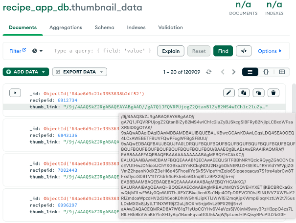

[Final Project] MongoDB에 이미지 저장하기 [python]
[Final Project] MongoDB에 이미지 저장하기
최종프로젝트를 진행하며 key: value로 이루어진 MongoDB data에서 바로 저장된 이미지를 가져와서 썸네일로 사용 할 수 없을까 고민을 하였습니다.
딥러닝 학습을 위한 이미지 전처리 과정에서 이미지 데이터는 개별 원소로 이루어진 행렬의 집합이라는 것을 배웠었고 이것을 활용 하여 집합을 저장하고 불러와 사용 할 수 없을 까라는 고민을 해결하는 과정에서 작성한 코드입니다.
대회를 진행하며, 할당된 서버 용량이 부족하여 다른 팀원의 서버에 MongoDB를 구성하고, admin계정으로 다른 팀원 서버의 데이터베이스에 접속을 하여 구성하는 과정으로 진행을 하였기 때문에 이미지 파일을 따로 저장하는 데 어려움이 있어 해당 방법으로 해결을 하였습니다.DB에 이미지를 저장하는 것은 병목을 발생 시킬 수 있기 때문에 이미지 메타정보만 저장하고 나머지는 물리적인 파일에 저장로 저장하는 것을 권장하는 편이니 실제로 사용하고자 한다면 트래픽이나 크기를 고려하여 결정하는 것을 권장합니다.
- base64
Base64는 바이너리 데이터를 텍스트 문자열 형식으로 인코딩하기 위한 방식 중 하나입니다. 주로 이메일과 같은 텍스트 기반의 전송 매체에서 바이너리 데이터를 전송할 때 사용됩니다. Base64는 64개의 출력 가능한 문자를 사용하여 모든 바이너리 데이터를 표현합니다.
- 바이너리 데이터를 Base64 문자열로 인코딩하기:
import base64
data = b"hello world"
# Base64로 인코딩
encoded_data = base64.b64encode(data)
print(encoded_data.decode('utf-8')) # 출력: aGVsbG8gd29ybGQ=
- Base64 문자열을 바이너리 데이터로 디코딩하기:
decoded_data = base64.b64decode(encoded_data)
print(decoded_data.decode('utf-8')) # 출력: hello world
- BytesIO
BytesIO는 Python의 io 모듈에 포함된 클래스로, 바이트 데이터에 대한 인메모리 파일 같은 객체를 제공합니다. 실제 파일을 디스크에 쓰고 읽는 대신, 바이트 데이터를 메모리 상에서 파일과 유사한 객체로 다룰 수 있게 해줍니다.
이를 통해 파일과 유사한 작업들 (예: 읽기, 쓰기, seek)을 메모리에서 직접 수행할 수 있습니다. 주로 바이너리 데이터를 임시로 저장하거나, 바이너리 형식의 파일과 상호작용하는 라이브러리에 바이트 데이터를 전달할 때 사용됩니다.
- BytesIO 객체 생성 및 데이터 쓰기:
from io import BytesIO
# BytesIO 객체 생성
byte_stream = BytesIO()
# 데이터 쓰기
byte_stream.write(b"Hello, World!")
- BytesIO 객체의 위치 조정 및 데이터 읽기:
# 읽기 전에 위치를 스트림의 시작으로 이동
byte_stream.seek(0)
# 데이터 읽기
read_data = byte_stream.read()
print(read_data) # 출력: b'Hello, World!'
- BytesIO 객체를 사용하여 이미지 데이터와 같은 바이너리 데이터 다루기:
from PIL import Image
# 이미지 데이터를 BytesIO 객체로 로드하기
image_data = b"..." # 바이너리 이미지 데이터
image_stream = BytesIO(image_data)
# BytesIO 객체에서 이미지 로드
image = Image.open(image_stream)
image.show()
- Baseline Code
- load_image
import requests
def load_image(url):
response = requests.get(url)
binary_data = response.content
return binary_data
주어진 URL에서 이미지를 얻고 이를 이진 데이터 형식으로 반환하는 코드
- Example
IMAGE_LINK = "https://logoproject.naver.com/img/img_story_renewal.png"
image_data = download_image(IMAGE_LINK)
print(type(image_data))
print(image_data)
> <class 'bytes'>
> b'\x89PNG\r\n\x1a\n\x00\x00\x00\rIHDR\x00\x00\x00\xdf\x00\x00\x00+\x08\x06\x00\x00...
- thumbnail_encoder
import base64
def thumbnail_encoder(image_data: bytes):
"""
Encode image data to a base64 encoded string.
Parameters:
- image_data (bytes): Raw image data in bytes format.
Returns:
- str: A base64 encoded string representation of the input image data.
"""
img_encode = base64.b64encode(image_data).decode('utf-8')
return img_encode
바이너리 형태의 이미지 데이터를 받아서 base64로 인코딩된 문자열로 반환하는 코드
이렇게 하면 바이너리 데이터를 텍스트 형식으로 웹 페이지나 JSON 응답 등에서 사용할 수 있다.
- Example
IMAGE_LINK = "https://logoproject.naver.com/img/img_story_renewal.png"
image_data = download_image(IMAGE_LINK)
image_encode = thumbnail_encoder(image_data)
print(type(image_encode))
print(image_encode)
> <class 'str'>
> iVBORw0KGgoAAAANSUhEUgAAAN8AAAArCAYAAAD4+l0jAAAAGXRFWHRTb2Z0d2FyZQBBZG9iZSBJbWFnZVJ...
- thumbnail_decoder
{key: value}로 저장된 dict형식의 데이터에서 value 값을 받아서 이미지로 반환 해주는 코드
import base64
from io import BytesIO
from PIL import Image
def thumbnail_decoder(image_data: str):
"""
Decodes and converts the image data from base64 to an Image object.
Args:
image_data (str): The base64-encoded image data.
Returns:
PIL.Image.Image: The decoded image as a PIL Image object.
"""
try:
image_bytes = base64.b64decode(image_data)
try:
image = Image.open(BytesIO(image_bytes)).convert('RGB')
except:
image = Image.open(BytesIO(image_bytes)).convert('RGBA')
return image
except Exception as e:
# Handle any exceptions that might occur during decoding
raise ValueError(f"Error decoding image data: {e}")
- Example
image_data = load_image(IMAGE_LINK)
image_encode = thumbnail_encoder(image_data)
json_dict = {'naver_img': image_encode}
thumbnail_decoder(json_dict['naver_img'])
실제로 mongodb에서 가져올 때에는 key값으로 검색을 하여, value를 가져와 value를 thumbnail_decoder에 바로 인자로 넣어주는 방식으로 구현했습니다.
- Result [MongoDB]

Mongodb Database - thumbnail_data
댓글남기기